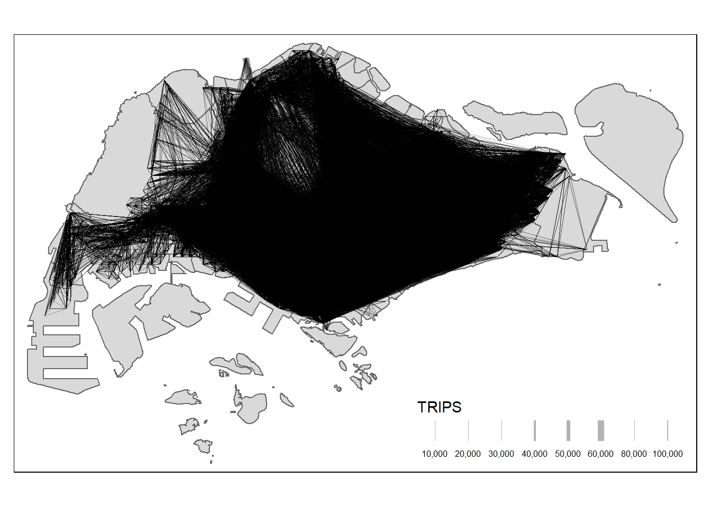

pacman::p_load(tidyverse, sf, sp,DT,stplanr,reshape2,ggpubr,
tmap)Take Home Exercise 2
Getting started
odbus <- read_csv("data/aspatial/origin_destination_bus_202310.csv")Rows: 5694297 Columns: 7
── Column specification ────────────────────────────────────────────────────────
Delimiter: ","
chr (5): YEAR_MONTH, DAY_TYPE, PT_TYPE, ORIGIN_PT_CODE, DESTINATION_PT_CODE
dbl (2): TIME_PER_HOUR, TOTAL_TRIPS
ℹ Use `spec()` to retrieve the full column specification for this data.
ℹ Specify the column types or set `show_col_types = FALSE` to quiet this message.glimpse(odbus)Rows: 5,694,297
Columns: 7
$ YEAR_MONTH <chr> "2023-10", "2023-10", "2023-10", "2023-10", "2023-…
$ DAY_TYPE <chr> "WEEKENDS/HOLIDAY", "WEEKDAY", "WEEKENDS/HOLIDAY",…
$ TIME_PER_HOUR <dbl> 16, 16, 14, 14, 17, 17, 17, 7, 14, 14, 10, 20, 20,…
$ PT_TYPE <chr> "BUS", "BUS", "BUS", "BUS", "BUS", "BUS", "BUS", "…
$ ORIGIN_PT_CODE <chr> "04168", "04168", "80119", "80119", "44069", "2028…
$ DESTINATION_PT_CODE <chr> "10051", "10051", "90079", "90079", "17229", "2014…
$ TOTAL_TRIPS <dbl> 3, 5, 3, 5, 4, 1, 24, 2, 1, 7, 3, 2, 5, 1, 1, 1, 1…summary(odbus) YEAR_MONTH DAY_TYPE TIME_PER_HOUR PT_TYPE
Length:5694297 Length:5694297 Min. : 0.00 Length:5694297
Class :character Class :character 1st Qu.:10.00 Class :character
Mode :character Mode :character Median :14.00 Mode :character
Mean :14.04
3rd Qu.:18.00
Max. :23.00
ORIGIN_PT_CODE DESTINATION_PT_CODE TOTAL_TRIPS
Length:5694297 Length:5694297 Min. : 1.00
Class :character Class :character 1st Qu.: 2.00
Mode :character Mode :character Median : 4.00
Mean : 20.76
3rd Qu.: 12.00
Max. :36668.00 Preparing the Flow Data
Importing the OD data
# check for NA values
sum(is.na(odbus))[1] 0sapply(odbus, function(x) sum(is.na(x))) YEAR_MONTH DAY_TYPE TIME_PER_HOUR PT_TYPE
0 0 0 0
ORIGIN_PT_CODE DESTINATION_PT_CODE TOTAL_TRIPS
0 0 0 # convert ORIGIN_PT_CODE and DESTINATION_PT_CODE columns)
odbus$ORIGIN_PT_CODE <-
as.factor(odbus$ORIGIN_PT_CODE)
odbus$DESTINATION_PT_CODE <-
as.factor(odbus$DESTINATION_PT_CODE)Data Aggregation
# Aggregate data for a specific time slot
origin6_9wdm <- odbus %>%
filter(DAY_TYPE == "WEEKDAY") %>%
filter(TIME_PER_HOUR >= 6 & TIME_PER_HOUR <= 9) %>%
group_by(ORIGIN_PT_CODE, DESTINATION_PT_CODE) %>%
summarise(TRIPS = sum(TOTAL_TRIPS))`summarise()` has grouped output by 'ORIGIN_PT_CODE'. You can override using
the `.groups` argument.head(origin6_9wdm)# A tibble: 6 × 3
# Groups: ORIGIN_PT_CODE [1]
ORIGIN_PT_CODE DESTINATION_PT_CODE TRIPS
<fct> <fct> <dbl>
1 01012 01112 290
2 01012 01113 118
3 01012 01121 77
4 01012 01211 118
5 01012 01311 165
6 01012 07371 14Save output in rds for later use
write_rds(origin6_9wdm, "data/rds/origin6_9wdm.rds") Import rds file in R
origin6_9wdm <- read_rds("data/rds/origin6_9wdm.rds") Prepare for Geospatial Analysis
Map the bus stop codes to their geographical locations (latitude and longitude) by joining data with another dataset that contains these geographical coordinates.
below 2 data will be used:
Bus Stop Location (Last updated Jul 2023) from LTADataMall (Last updated Jul 2023)
Master Plan 2019 Subzone Boundary (No Sea) from Data.gov.sg updated on December 23, 2019
hexagon, a hexagon layer of 375m (this distance is the perpendicular distance between the centre of the hexagon and its edges.)
busstop <- st_read(dsn = "data/geospatial",
layer = "BusStop") %>%
st_transform(crs = 3414)Reading layer `BusStop' from data source
`C:\kekekay\ISSS624\Take-home_Ex2\data\geospatial' using driver `ESRI Shapefile'
Simple feature collection with 5161 features and 3 fields
Geometry type: POINT
Dimension: XY
Bounding box: xmin: 3970.122 ymin: 26482.1 xmax: 48284.56 ymax: 52983.82
Projected CRS: SVY21mpsz <- st_read(dsn = "data/geospatial",
layer = "MPSZ-2019") %>%
st_transform(crs = 3414)Reading layer `MPSZ-2019' from data source
`C:\kekekay\ISSS624\Take-home_Ex2\data\geospatial' using driver `ESRI Shapefile'
Simple feature collection with 332 features and 6 fields
Geometry type: MULTIPOLYGON
Dimension: XY
Bounding box: xmin: 103.6057 ymin: 1.158699 xmax: 104.0885 ymax: 1.470775
Geodetic CRS: WGS 84write mpsz sf tibble data frame into an rds file and import in R enviroment
mpsz <- write_rds(mpsz, "data/rds/mpsz.rds")
mpsz <- read_rds("data/rds/mpsz.rds")glimpse(busstop)Rows: 5,161
Columns: 4
$ BUS_STOP_N <chr> "22069", "32071", "44331", "96081", "11561", "66191", "2338…
$ BUS_ROOF_N <chr> "B06", "B23", "B01", "B05", "B05", "B03", "B02A", "B02", "B…
$ LOC_DESC <chr> "OPP CEVA LOGISTICS", "AFT TRACK 13", "BLK 239", "GRACE IND…
$ geometry <POINT [m]> POINT (13576.31 32883.65), POINT (13228.59 44206.38),…glimpse(mpsz)Rows: 332
Columns: 7
$ SUBZONE_N <chr> "MARINA EAST", "INSTITUTION HILL", "ROBERTSON QUAY", "JURON…
$ SUBZONE_C <chr> "MESZ01", "RVSZ05", "SRSZ01", "WISZ01", "MUSZ02", "MPSZ05",…
$ PLN_AREA_N <chr> "MARINA EAST", "RIVER VALLEY", "SINGAPORE RIVER", "WESTERN …
$ PLN_AREA_C <chr> "ME", "RV", "SR", "WI", "MU", "MP", "WI", "WI", "SI", "SI",…
$ REGION_N <chr> "CENTRAL REGION", "CENTRAL REGION", "CENTRAL REGION", "WEST…
$ REGION_C <chr> "CR", "CR", "CR", "WR", "CR", "CR", "WR", "WR", "CR", "CR",…
$ geometry <MULTIPOLYGON [m]> MULTIPOLYGON (((33222.98 29..., MULTIPOLYGON (…Join OD Data with Geospatial Data
associate each bus stop code in your origin-destination (OD) data with its corresponding geographical location from the busstop dataset.
# Join OD data with bus stop geospatial data for both origin and destination
origin6_9wdm_geo <- origin6_9wdm %>%
left_join(busstop, by = c("ORIGIN_PT_CODE" = "BUS_STOP_N")) %>%
left_join(busstop, by = c("DESTINATION_PT_CODE" = "BUS_STOP_N"), suffix = c("_origin", "_dest")) Warning in left_join(., busstop, by = c(ORIGIN_PT_CODE = "BUS_STOP_N")): Detected an unexpected many-to-many relationship between `x` and `y`.
ℹ Row 25632 of `x` matches multiple rows in `y`.
ℹ Row 1335 of `y` matches multiple rows in `x`.
ℹ If a many-to-many relationship is expected, set `relationship =
"many-to-many"` to silence this warning.Warning in left_join(., busstop, by = c(DESTINATION_PT_CODE = "BUS_STOP_N"), : Detected an unexpected many-to-many relationship between `x` and `y`.
ℹ Row 167 of `x` matches multiple rows in `y`.
ℹ Row 293 of `y` matches multiple rows in `x`.
ℹ If a many-to-many relationship is expected, set `relationship =
"many-to-many"` to silence this warning.Create Analytical Hexagons
Create a hexagonal grid to represent Traffic Analysis Zones (TAZs) and add ID to each hexagon:
hide code here
hexagon_grid = st_make_grid(mpsz, c(700, 700), what = "polygons", square = FALSE)
hexagon_grid_sf = st_sf(hexagon_grid) %>%
mutate(grid_id = 1:length(lengths(hexagon_grid)))
busstop_grid <- st_intersection(hexagon_grid_sf,busstop) %>%
select(BUS_STOP_N, grid_id) %>%
st_drop_geometry()Warning: attribute variables are assumed to be spatially constant throughout
all geometrieswrite_rds(busstop_grid, "data/rds/busstop_grid.rds")
write_rds(hexagon_grid_sf, "data/rds/hexagon_grid_sf.rds")
check_duplicate <- busstop_grid %>%
group_by_all() %>%
filter(n()>1) %>%
ungroup()
busstop_grid <- unique(busstop_grid)
# the check-duplicate should be empty
busstop_grid <- busstop_grid %>%
filter(!is.na(grid_id) & grid_id > 0)origin6_9wdm_geo$ORIGIN_PT_CODE <- as.character(origin6_9wdm_geo$ORIGIN_PT_CODE)
origin6_9wdm_geo$DESTINATION_PT_CODE <- as.character(origin6_9wdm_geo$DESTINATION_PT_CODE)
origin6_9wdm_geo <- origin6_9wdm_geo %>%
left_join(busstop_grid, by = c("ORIGIN_PT_CODE" = "BUS_STOP_N"))Warning in left_join(., busstop_grid, by = c(ORIGIN_PT_CODE = "BUS_STOP_N")): Detected an unexpected many-to-many relationship between `x` and `y`.
ℹ Row 114224 of `x` matches multiple rows in `y`.
ℹ Row 1334 of `y` matches multiple rows in `x`.
ℹ If a many-to-many relationship is expected, set `relationship =
"many-to-many"` to silence this warning.origin6_9wdm_geo <- origin6_9wdm_geo %>%
rename(ori_grid = grid_id)
origin6_9wdm_geo <- origin6_9wdm_geo %>%
left_join(busstop_grid, by = c("DESTINATION_PT_CODE" = "BUS_STOP_N"))Warning in left_join(., busstop_grid, by = c(DESTINATION_PT_CODE = "BUS_STOP_N")): Detected an unexpected many-to-many relationship between `x` and `y`.
ℹ Row 639 of `x` matches multiple rows in `y`.
ℹ Row 293 of `y` matches multiple rows in `x`.
ℹ If a many-to-many relationship is expected, set `relationship =
"many-to-many"` to silence this warning.origin6_9wdm_geo <- origin6_9wdm_geo %>%
rename(desti_grid = grid_id)
origin6_9wdm_geo <- origin6_9wdm_geo %>%
ungroup() %>%
select(-c(ORIGIN_PT_CODE, DESTINATION_PT_CODE))origin6_9wdm_geo <- na.omit(origin6_9wdm_geo)origin6_9wdm_geo <- origin6_9wdm_geo %>%
select(ori_grid, desti_grid, TRIPS)The set.zoom.limits argument ensures that the map cannot be zommed out beyond Singapore and also cannot be zoomed in too much such that the map cannot be loaded.
Visualising Spatial Interaction
prepare a desire line by using stplanr package
Removing intra-zonal flows
origin6_9wdm_geo1 <- origin6_9wdm_geo[origin6_9wdm_geo$ori_grid != origin6_9wdm_geo$desti_grid, ]Creating desire lines
flowLine <- od2line(flow = origin6_9wdm_geo1,
zones = hexagon_grid_sf,
zone_code = "grid_id")Creating centroids representing desire line start and end points.Visualizing the desired lines
tm_shape(mpsz) +
tm_polygons() +
flowLine %>%
tm_shape() +
tm_lines(lwd = "TRIPS",
style = "quantile",
scale = c(0.1, 1, 3, 5, 7, 10),
n = 6,
alpha = 0.3)Warning in g$scale * (w_legend/maxW): longer object length is not a multiple of
shorter object lengthWarning in g$scale * (x/maxW): longer object length is not a multiple of
shorter object lengthLegend labels were too wide. Therefore, legend.text.size has been set to 0.49. Increase legend.width (argument of tm_layout) to make the legend wider and therefore the labels larger.